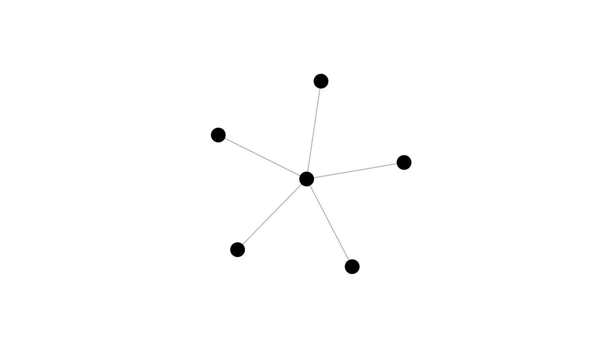

This vignette introduces threshold graphs, a class of graphs
with a unique centrality ranking and relevant functions from the
netrankr package to work with this class of graphs.
Theoretical Background
A threshold graph is a graph, where all nodes are pairwise comparable by neighborhood inclusion. Formally,
According to this vignette, it is thus clear that all centrality indices induce the same ranking on a threshold graph. More technical details on threshold graphs and results related to centrality can be found in
Schoch, David & Valente, Thomas W., & Brandes, Ulrik. (2017). Correlations among centrality indices and a class of uniquely ranked graphs. Social Networks, 50, 46-54.(link)
Uniquely Ranked Graphs in the netrankr Package
Threshold graphs on
vertices can be constructed iteratively with a sequence of
’s
and
’s.
For each
,
an isolated vertex is inserted and for each
a vertex that connects to all previously inserted one’s. This iterative
process is implemented in the threshold_graph function. The
parameter n is used to set the desired number of vertices.
The parameter p is the probability that a dominated vertex
is inserted in each step. This parameter roughly equates to the density
of the network.
g1 <- threshold_graph(500,0.4)
g2 <- threshold_graph(500,0.05)
c(round(graph.density(g1),2), round(graph.density(g2),2))## Warning: `graph.density()` was deprecated in igraph 2.0.0.
## ℹ Please use `edge_density()` instead.
## This warning is displayed once every 8 hours.
## Call `lifecycle::last_lifecycle_warnings()` to see where this warning was
## generated.## [1] 0.41 0.03The class of threshold graphs includes various well-known graphs, for
instance star shaped and complete networks. This graphs can be
constructed with p=0 and p=1 respectively.
star <- threshold_graph(6,0)
complete <- threshold_graph(6,1)
plot(star,vertex.label=NA,vertex.color="black")
plot(complete,vertex.label=NA,vertex.color="black")
To check that all pairs are comparable by neighborhood inclusion, we
can use the function comparable_pairs. The function
computes the density of the underlying undirected graph induced by the
neighborhood-inclusion relation.
g <- threshold_graph(10,0.4)
P <- neighborhood_inclusion(g)
comparable_pairs(P)## [1] 1Correlation and Threshold Graphs
We construct a random threshold graph and calculate some standard
measures of centrality that are included in the igraph
package.
g <- threshold_graph(100,0.1)
cent.df <- data.frame(
degree=degree(g),
betweenness=betweenness(g),
closeness=closeness(g),
eigenvector=round(eigen_centrality(g)$vector,8),
subgraph=subgraph_centrality(g)
)We expect, that all indices are perfectly rank correlated since all pairs of nodes are comparable by neighborhood-inclusion.
## degree betweenness closeness eigenvector subgraph
## degree 1.00 0.52 1.00 1.00 0.96
## betweenness 0.52 1.00 0.52 0.52 0.50
## closeness 1.00 0.52 1.00 1.00 0.96
## eigenvector 1.00 0.52 1.00 1.00 0.96
## subgraph 0.96 0.50 0.96 0.96 1.00We, however, obtain correlations that are not equal to one. This is
due to the definition of Kendall’s (tie corrected)
.
Before going into detail, consider the following cases which can arise
when comparing two scores of indices x and
y.
- concordant:
x[i]>x[j] & y[i]>y[j]orx[i]<x[j] & y[i]<y[j] - discordant:
x[i]>x[j] & y[i]<y[j]orx[i]>x[j] & y[i]<y[j] - tied:
x[i]=x[j] & y[i]=y[j] - left/right ties:
x[i]=x[j] & y[i]!=y[j]orx[i]!=x[j] & y[i]=y[j]
Kendall’s considers left and right ties as correlation reducing. That is if two vertices are tied in one ranking, but not the other, the correlations is weakened. Left and right ties are, however, not forbidden according to the neighborhood inclusion property. The only forbidden case are discordant pairs. That is, can not result in but it may result in . Also, one can argue that left and right ties distinguish between fine/coarse grained indices.
netrankr comes with a function called
compare_ranks which calculates all occurrences of the above
cases. Simply counting the cases instead of aggregating them will help
circumvent the problem of possibly misinterpreting correlation
measures.
comp <- compare_ranks(cent.df$degree,cent.df$betweenness)
unlist(comp)## concordant discordant ties left right
## 1209 0 464 0 3277Notice that there is a high number of right ties which influences the correlation if measured with Kendall’s . However, there do not exist any discordant pairs for any pair of indices.
dis.pairs <- matrix(0,5,5)
dis.pairs[1,] <- apply(cent.df,2,
function(x)compare_ranks(cent.df$degree,x)$discordant)
dis.pairs[2,] <- apply(cent.df,2,
function(x)compare_ranks(cent.df$betweenness,x)$discordant)
dis.pairs[3,] <- apply(cent.df,2,
function(x)compare_ranks(cent.df$closeness,x)$discordant)
dis.pairs[4,] <- apply(cent.df,2,
function(x)compare_ranks(cent.df$eigenvector,x)$discordant)
dis.pairs[5,] <- apply(cent.df,2,
function(x)compare_ranks(cent.df$subgraph,x)$discordant)
dis.pairs## [,1] [,2] [,3] [,4] [,5]
## [1,] 0 0 0 0 0
## [2,] 0 0 0 0 0
## [3,] 0 0 0 0 0
## [4,] 0 0 0 0 0
## [5,] 0 0 0 0 0Although Kendall’s suggests that the correlations among indices can be low, we see that there do not exist any discordant pairs on threshold graphs.
Distances from a threshold graph
As it is always the case with artificial graph structures, it is rather unlikely to encounter threshold graphs in the wild. The best we can hope for is to be close to a threshold graph. This is based on the intuition that the closer a graph is to be a threshold graph, the more of its properties resemble one. The closer we are, the more correlated we assume centrality indices to be. The further away we are, the more disagreement we will find among indices. The problematic point is: how do we define being close to a threshold graph. An in depth discussion of possible measures can be found in the paper mentioned at the beginning of this vignette.
netrankr implements one function that can be used to
assess the distance of arbitrary graphs to threshold graphs. The so
called majorization gap operates solely on the degree sequence
and determines the number of entries that have to be changed in order to
obtain the degree sequence of a threshold graph. Changing can, however,
not be done arbitrarily. The only allowed operation is to lower the
degree of one vertex and simultaneously increase the degree of another.
For threshold graphs, this measure is obviously zero.
tg <- threshold_graph(200,0.2)
majorization_gap(g)## [1] 0By default, majorization_gap is normalized by the number
of edges.
data("dbces11")
g <- dbces11
majorization_gap(g)## [1] 0.3529412In this example, around 35% of all entries have to be changed in
order to obtain a threshold graph. The normalization is done to compare
the majorization gap across networks with different sizes. To obtain the
raw number of changes, set norm=FALSE.
majorization_gap(g,norm = FALSE)## [1] 6The majorization gap serves as an indicator for how much variance we can expect in the rankings of different centrality indices. The lower it is, the closer we are to a threshold graph where only one ranking is possible. The further away we are, the more degrees of freedom exist to rank nodes differently and we will generally observe lower correlations. For more details, again, refer to the mentioned paper at the beginning.